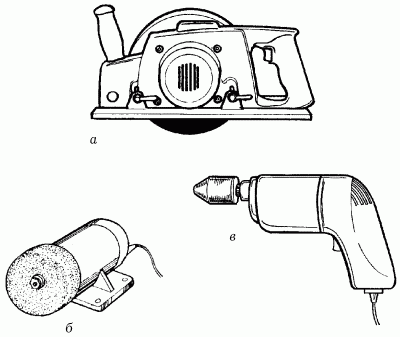
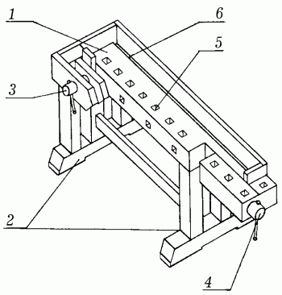
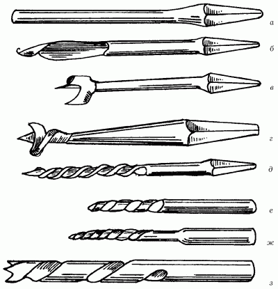
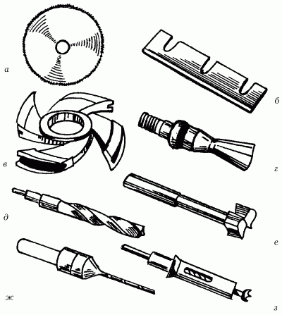
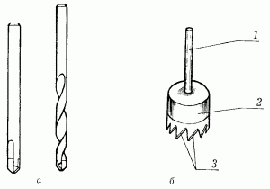

Электроинструменты.


В последнее время инструменты с электрическим приводом все чаще и чаще используются в быту, так как их размеры стали компактными, а цены значительно снизились. Применение электроинструментов при изготовлении различных изделий из дерева и металла позволяет экономить силы и время.

Рис. 96. Электроинструменты: а – электропила; б – электроточило; в – электродрель.
ЭлектропилаБывает двух видов: цепная и дисковая. Первый тип предназначен для распила больших кряжей, пластин, толстых брусьев и досок. В основе устройства лежит соединенная пильная цепь, вращение которой осуществляется посредством электромотора через редуктор. Сама цепь состоит из зубьев, скрепленных между собой шарнирами.
Второй тип необходим при распиливании досок, брусьев как вдоль, так и поперек. В основе этого устройства лежит круглое металлическое полотно диаметром 20 см и толщиной 2 мм. Защищенный неподвижным кожухом диск крепится к электромотору. Кожух защищает только половину пильного диска, при этом открытой остается нижняя часть. Для того чтобы линия распила получалась ровной, края кожуха должны соприкасаться с поверхностью древесины и упираться в нее при работе.
Кроме того, такая пила для удобства снабжена двумя ручками. И если ее закрепить на верстаке, то получится весьма оригинальный станок для распила досок, так часто используемый в отечественном производстве.

Рис. 97. Верстак: 1 – рабочая доска; 2 – опоры-основания; 3 —поперечный зажим; 4 – продольный зажим; 5 – гнезда; 6 – лоток.
Если во время продвижения пильного диска по массиву древесины возникают затруднения, нужно, не останавливая инструмент, отодвинуть его на несколько сантиметров назад, следуя точно по распилу, а затем вновь медленно направить движение пилы по той же линии.
При работе с электропилой следует соблюдать определенные правила техники безопасности. Прежде чем приступить к работе, необходимо проверить исправность крепления деталей и электропроводки, пильный диск должен быть надежно закреплен. Кроме того, электропила должна быть заземлена, причем распиливать доски нужно только в сухом, проветриваемом помещении и никогда не приступать к работе рядом с открытым источником воды, в сыром или влажном помещении.
Всегда обращают внимание на пильный диск или цепь. Если при работе пила быстро и сильно нагревается, то это означает, что плохо заточены зубья.
По окончании работы снимают диск или цепь, освобождают пилу от опилок, очищают керосином и укладывают в специально оборудованный ящик, до следующего использования.
ЭлектрорубанокПрименяется для выравнивания поверхности древесной плиты или доски вдоль волокон. Строгание производится вращающимися фрезами, движение которых обеспечивается с помощью электромотора. Опускающаяся и поднимающаяся передняя лыжа позволяет изменять глубину проникновения режущей фрезы в массив древесины.
Перед работой с электрорубанком закрепляют доску на верстаке. Затем проводят инструментом по поверхности. При этом не нажимают на него, а только помогают продвигаться в нужном направлении. Передвигать рубанок следует только по направлению роста волокон и следить за тем, чтобы стружка и опилки не попадали под лыжи. При втором и третьем проходах по поверхности древесины следует выключить рубанок, вернуться на исходную позицию и включить его вновь. Если необходимо сделать перерыв в работе, то выключенный рубанок кладется на бок или лыжами вверх. Меры безопасности при работе с рубанком заключаются в основном в проверке исправности проводки, осторожном обращении с режущим инструментом и в выключении его на время перерыва.
Обрабатываемая этим инструментом поверхность не всегда получается ровной и гладкой. Первый дефект может возникнуть при неправильном и неравномерном расположении режущих фрез в пазу относительно уровня лыж. Второй дефект появляется в результате использования незаточенных фрез.
После работы необходимо вынуть фрезы из пазов, очистить их керосином и уложить в коробку.
ЭлектродолбежникИспользуется для выборки древесины под прямоугольные гнезда для крепления деталей. Основной частью этого инструмента является долбежная цепь, состоящая из небольших резцов, связанных между собой шарнирами.
Для получения гнезд различных размеров необходимо только поменять пластинку, на которой крепится долбежная цепь.
Чтобы получить ровные края гнезда крепления, перед началом работы следует заточить или зачистить резцы, и только после этого можно приготовить станок к работе. Затем нужно закрепить доску или деталь на верстаке, установить на ней станок и включить его.
Перед началом работы закрепляют заготовку или брусок в тисках и наносят разметку на поверхность древесины сначала простым твердым карандашом, а затем делают риски ножом.
Если требуется глубокое и большое отверстие, то сначала нужно выбрать древесину долотом, а уже затем зачищать поверхность стамеской.
Приступая к работе, следует отдать должное выборке древесины возле кромок, которые расположены поперек волокон.
Глухие большие отверстия делаются так: лезвие долота вбивают при помощи киянки, затем немного наклоняют в сторону, противоположную краю со снятой фаской, после чего полотно поднимают вверх. Древесину надламывают и несколько кусков отделяют от массива. Затем отступают на 2–3 мм от проделанного отверстия и повторяют то же самое. При отделке кромок углубления всегда отступают от нее 1–2 мм, а долото ставят фаской к ней. Если можно поднимать полотно долота стороной, где снята фаска, то поднять древесину незачищенной поверхностью полотна.
Если понадобилось сделать сквозное отверстие, то выборку древесины следует производить с обеих сторон одновременно, постепенно уменьшая промежуточный слой.
Проделанное отверстие зачищают у кромок прямой, узкой стамеской.
При работе с электродолбежником необходимо соблюдать некоторые меры предосторожности. Они заключаются в правильном креплении долбежной цепи, исправности электропроводки, правильной подаче древесины при использовании закрепленного станка.
В случае если станок не закреплен, то обязательно нужно следить за хорошим креплением бруска. Не следует приступать к работе с незаземленным станком.
ЭлектродрельЭлектродрели предназначены для сверления отверстий как в древесине, так и в металле. Этот инструмент состоит из электромотора, который через последовательную цепь креплений соединяется со шпинделем патрона для сверла. Чаще всего для этой операции используются спиральные сверла.
В ходе работы сверло должно проникать постепенно, без толчков и рывков. Если необходимо сделать сквозное отверстие, то нажим по мере продвижения сверла надо уменьшать.
При работе с дрелью используются следующие сверла:
– ложечные;
– центровые;
– спиральные.

Рис. 98. Сверла: а, б – перовые; в, г – центровые; д – винтовое; е-з – спиральные без фаски, с фаской и штопорное.
У ложечного сверла в нижней части сделан продольный желоб с острорежущим краем и винтовым жалом, которое тянет за собой сверло и дает ему центровое направление. Во время сверления стружка не удаляется, поэтому сверло приходится периодически вынимать из отверстия. Таким сверлом довольно трудно сделать точное отверстие. Во время сверления не следует сильно нажимать на сверло, так как дерево может расколоться и вся работа пойдет насмарку. Поэтому применение ложечного сверла сводится только к работам, не требующим большой точности, например сверлению отверстий под шурупы.
Центровое сверло обладает лучшими характеристиками, чем ложечное. Его режущая часть выполнена в виде лопатки с острым концом (центром), боковым резцом (дорожником) и плоским ножом, расположенным по радиусу. Центрируется сверло острием и действует следующим образом: древесина, обрезанная боковым резцом, удаляется плоским ножом в виде спиральной ленты.
Если нужно сверлить дерево твердой породы, то потребуется довольно значительные физические усилия.

Рис. 99. Дополнительные насадки к электродрели: а – дисковая пила; б – строгальный нож; в, г – фасонная и концевая фрезы; д, е – сверла; ж – зенкер; з – перка.
Спиральные, винтовые, цилиндрические сверла являются самыми удобными. Винтовой, конической формы заглубитель помогает сверлу легко входить в дерево. Боковые винтовые ленточки оканчиваются острыми резцами (дорожниками), с помощью которых древесина режется по окружности. Подрезная древесина удаляется плоским ножом и поднимается по спирали вверх. Дорожники определяют диаметр просверливаемого отверстия. Для чистовой обработки лучше использовать сверла, имеющие мелкую насечку жала. Для работы с мягким деревом нужны сверла с крупной насечкой. Спиральным сверлом работать намного легче, чем всеми другими.
Иногда при сверлении в месте выхода сверла дерево откалывается, а само отверстие получается скошенным. Для того чтобы избежать этих неприятностей, следует придерживаться следующих правил:
– заготовка, которую необходимо просверлить, должна быть надежно закреплена;
– центры будущих отверстий следует намечать шилом или начертить обыкновенным карандашом;
– нужно проверить точность направления сверла дважды: перед началом сверления и после того, как сверло войдет на небольшую глубину;
– направление сверла при высверливании глубоких отверстий можно проверить на глаз, по заранее отмеченной карандашом линии.

Рис. 100. Виды сверл: а – сверла c твердосплавными режущими кромками; б – победитовая коронка для сверления отверстий в облицовочных плитках (1 – вал крепления на дрель; 2 – коронка; 3 – победитовые напайки).
Для сверления несквозных отверстий используют ограничитель – деревянный брусок, который располагают сбоку сверла и сверлят до тех пор, пока ограничитель не соприкоснется с зажимным патроном. Перед началом работы сверлят брусок сверлом большого диаметра и получают приспособление для наблюдения за углом сверления.
Можно сделать несколько отверстий под разными углами, которые впоследствии послужат эталоном. Около каждого из них делают необходимую пометку, чтобы получился универсальный шаблон.
Очень часто отколы дерева происходят в месте, где выходит сверло, и, чтобы избежать этого, необходимо внимательно наблюдать за выходом жала наружу: как только оно покажется, следует перевернуть деталь и прекратить сверление. В принципе возможно сверление в одном направлении, но тогда под низ обрабатываемого предмета следует положить небольшой брусок дерева.
Очень часто появляется необходимость расширить уже просверленное отверстие. Для этого в имеющееся отверстие вставляют деревянную пробку, а в середину вворачивают сверло. В данной ситуации пробка служит центрирующим звеном и направляет сверло по оси меньшего отверстия. Сверло можно использовать и в качестве вспомогательного инструмента для выдалбливания гнезд. Но для этого потребуется сверло, диаметр которого равен ширине будущего отверстия. Сверлят на нужную глубину ряд гнезд, а затем убирают оставшиеся перемычки стамеской.
Во время хранения, чтобы уберечь головку сверла от повреждений, нужно навернуть на жало деревянную или обычную пробку подходящего размера.